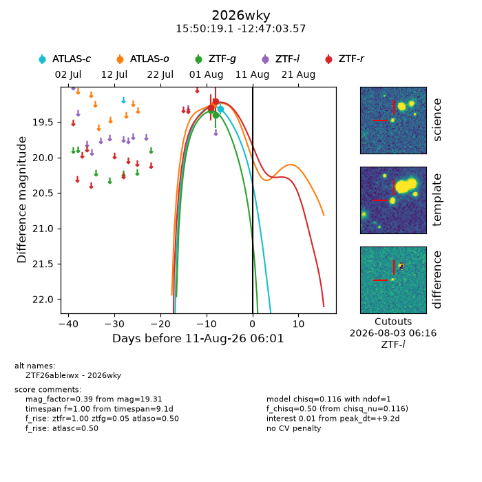
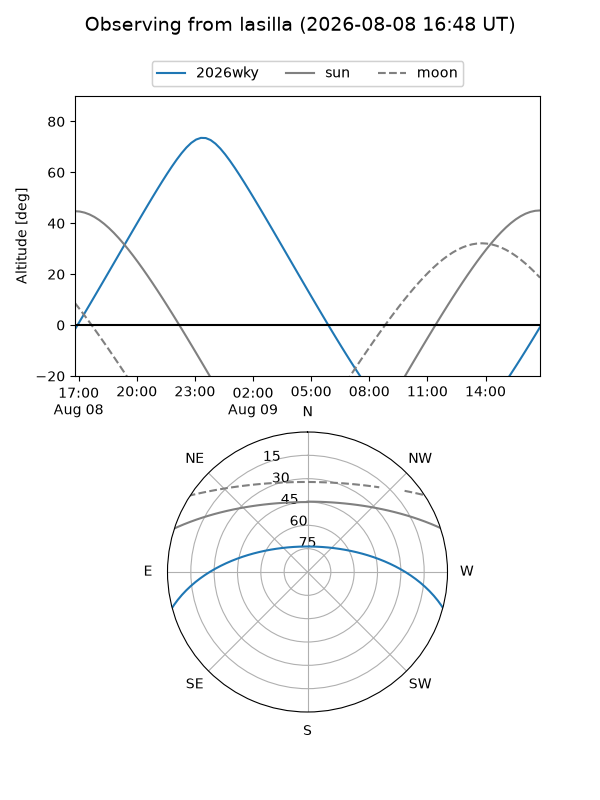
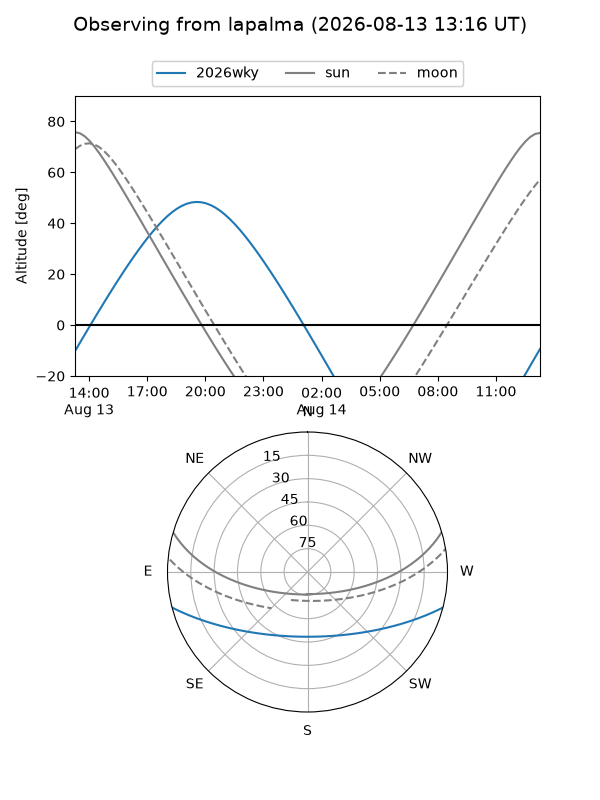
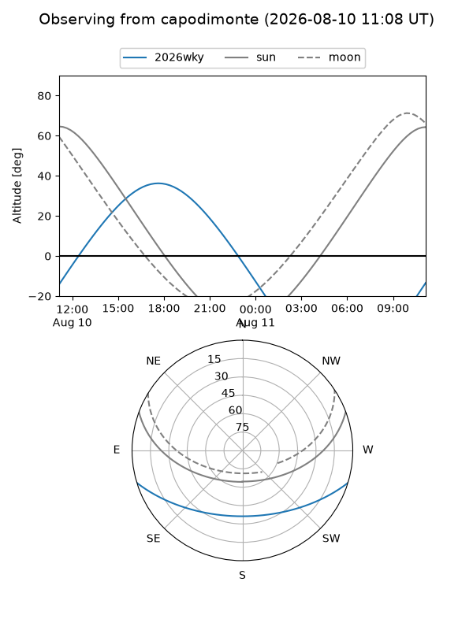
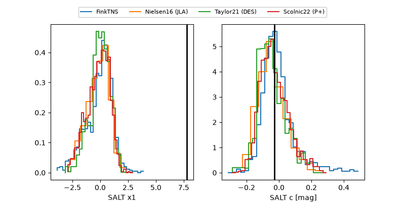

2026wky
Target 2026wky at 2026-08-11 06:04
Aliases and brokers:
FINK-ZTF: ztf.fink-portal.org/ZTF26ableiwx
Lasair-ZTF: lasair-ztf.lsst.ac.uk/objects/ZTF26ableiwx
ALeRCE-ZTF: alerce.online/object/ZTF26ableiwx
YSE-PZ: ziggy.ucolick.org/yse/transient_detail/2026wky
TNS name: wis-tns.org/object/2026wky
Direct TNS query: direct search
alt names
ZTF26ableiwx (ztf,fink_ztf)
2026wky (tns,yse)
Coordinates:
equatorial (ra, dec) = 237.5797,-12.78432
equatorial (HMS+DMS) = 15:50:19.13,-12:47:03.57
galactic (l, b) = (356.1554,+31.05123)
Flags:
TNS type: nan
peak dt: +9.2
Photometry:
last atlasc=19.31, atlaso=19.26, ztfg=19.40, ztfr=19.20
1 atlasc, 1 atlaso, 2 ztfg, 2 ztfr detections
Lightcurve

Visibility



Additional plots
